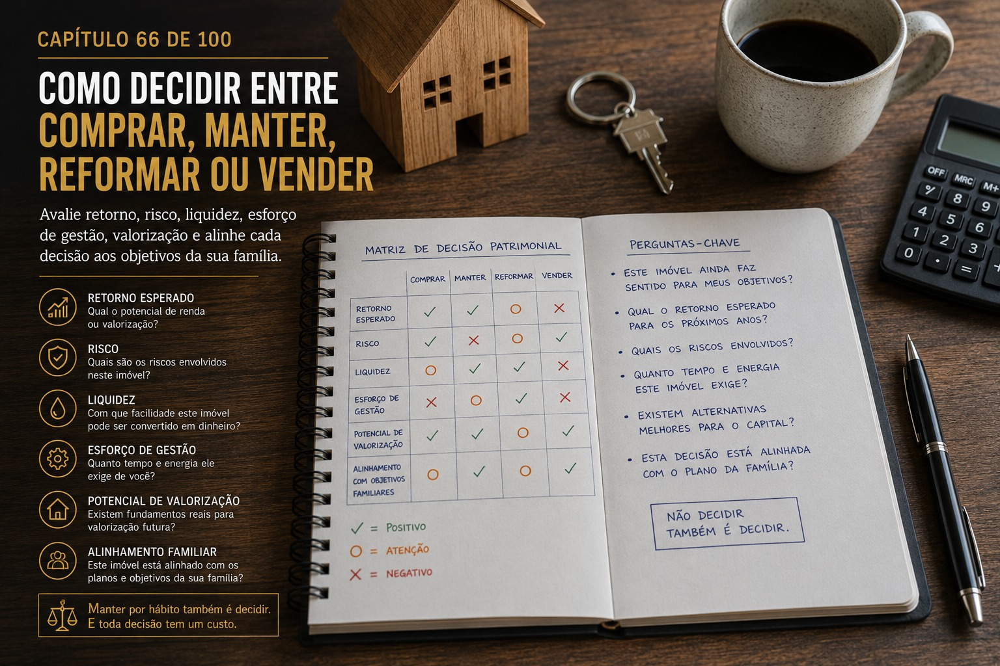
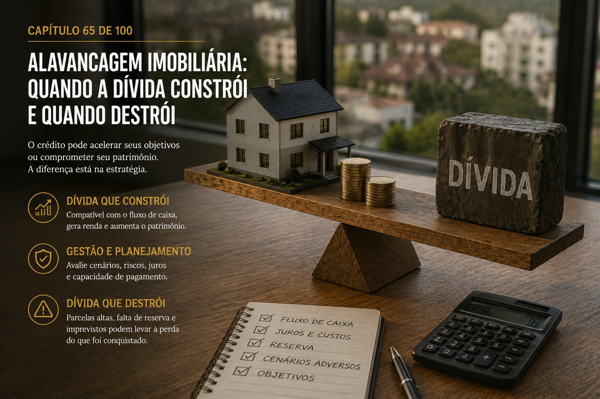
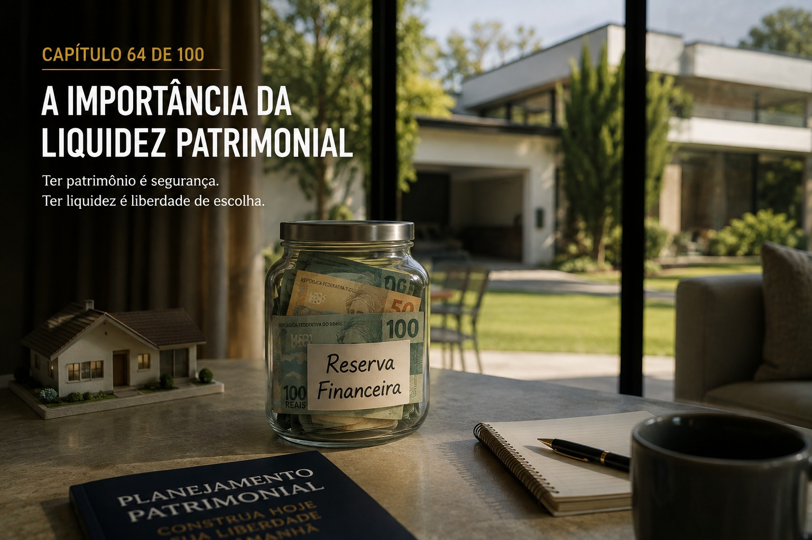
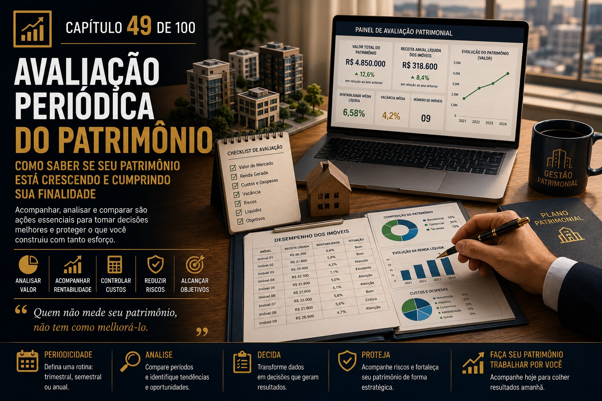
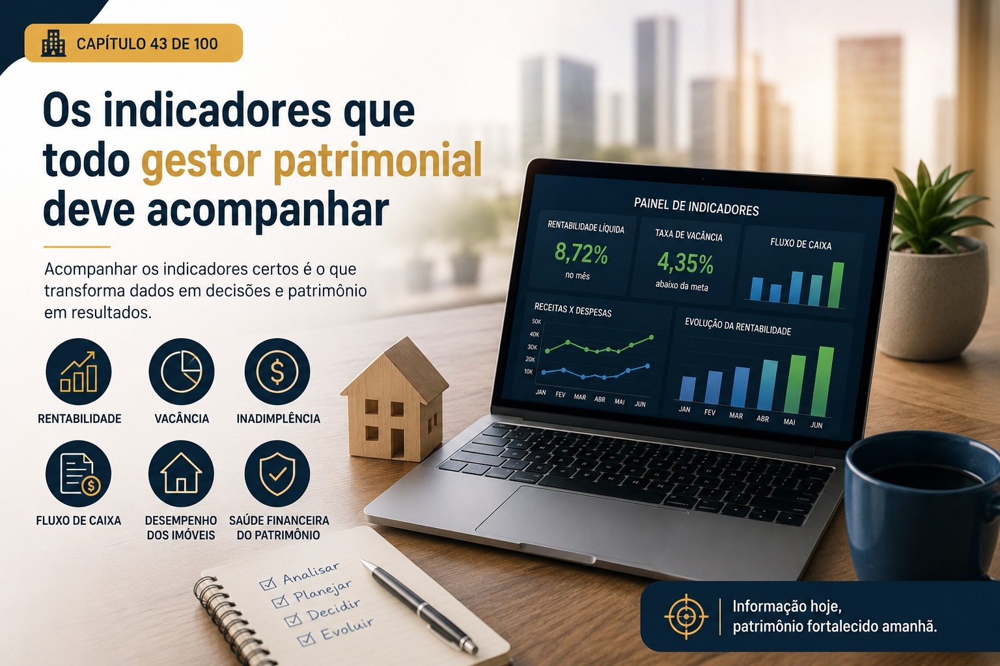
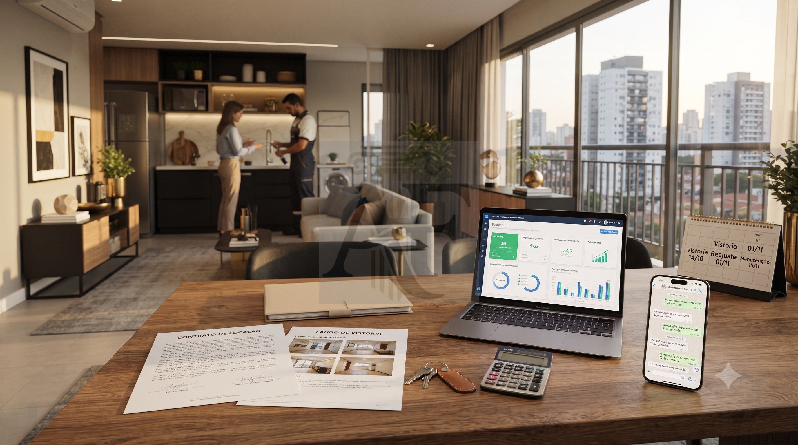
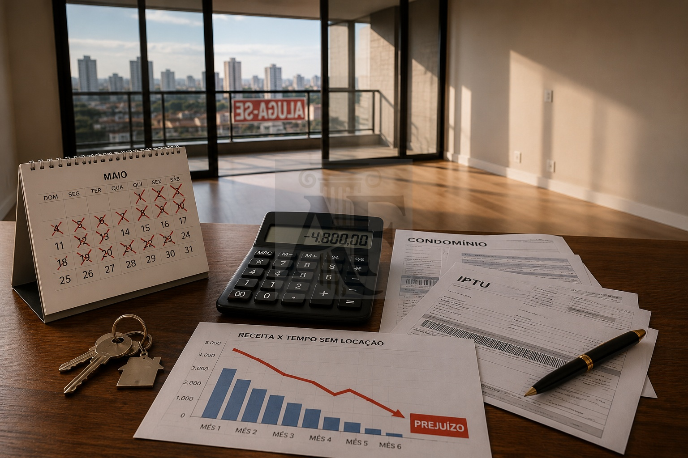
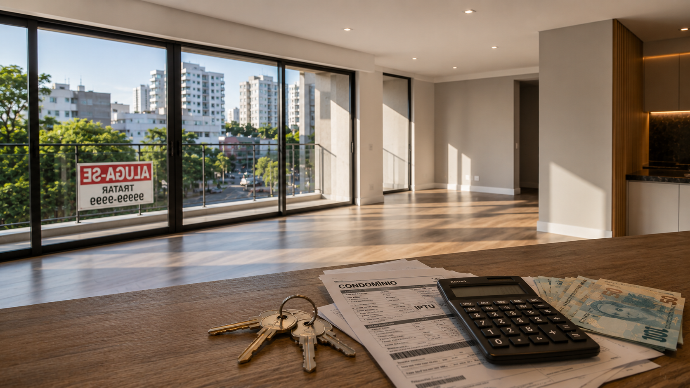

Como Decidir entre Comprar, Manter, Reformar ou Vender
Aprenda a decidir entre comprar, manter, reformar ou vender um imóvel considerando retorno, risco, liquidez, esforço de gestão, valorização e objetivos patrimoniais.

Alavancagem Imobiliária: Quando a Dívida Constrói e Quando Destrói
Entenda como utilizar a alavancagem imobiliária com responsabilidade, avaliando capacidade de pagamento, juros, fluxo de caixa, riscos e cenários adversos.

A Importância da Liquidez Patrimonial
Entenda por que a liquidez patrimonial é essencial para a segurança financeira, a liberdade de escolha e a gestão eficiente de imóveis e outros ativos.
O Mapa Patrimonial: Como Enxergar Tudo Antes de Decidir
Entenda como criar um mapa patrimonial para visualizar imóveis, renda, dívidas, riscos, documentos e responsabilidades antes de tomar decisões sobre seu patrimônio.
Como Transformar a Liberdade Patrimonial em um Plano de Vida
Descubra como transformar a liberdade patrimonial em um plano de vida, alinhando imóveis, renda, liquidez, segurança e patrimônio aos seus objetivos de curto, médio e longo prazo.
O Patrimônio como Instrumento de Liberdade
Entenda como transformar o patrimônio imobiliário em liberdade, segurança e autonomia por meio de renda, liquidez, planejamento, gestão de riscos e decisões de longo prazo.
Os Princípios dos Grandes Gestores Patrimoniais
Conheça os princípios da gestão patrimonial profissional e descubra como grandes gestores analisam patrimônio, riscos, renda, liquidez, sucessão e crescimento de longo prazo.
Como Construir um Legado Imobiliário
Entenda como transformar patrimônio imobiliário em um legado organizado, preservando bens, preparando herdeiros e criando continuidade para as próximas gerações.
Renda Passiva Sustentável
Entenda como construir uma renda passiva sustentável com imóveis, preservando o patrimônio e evitando que a busca por renda comprometa o futuro financeiro.
Patrimônio e Independência Financeira
Descubra como transformar patrimônio imobiliário em segurança, renda e liberdade financeira, reduzindo a dependência do trabalho.
Planejamento para Aposentadoria com Imóveis
Como transformar imóveis em uma fonte de renda para a aposentadoria, avaliando rentabilidade, custos, vacância, liquidez e segurança financeira.
Governança Familiar Aplicada aos Imóveis
Entenda como organizar decisões, responsabilidades e informações para administrar imóveis em família e preservar o patrimônio entre gerações.
Como Evitar a Deterioração do Patrimônio ao Longo das Gerações
Descubra como preservar patrimônio imobiliário entre gerações, reduzindo riscos financeiros, administrativos, familiares e patrimoniais.
Educação Financeira para Herdeiros
Entenda como preparar herdeiros para administrar dinheiro, imóveis e patrimônio com responsabilidade, conhecimento financeiro e visão de longo prazo.
Patrimônio Familiar
Entenda como organizar o patrimônio familiar, estabelecer objetivos, dividir responsabilidades e preparar a família para administrar os bens com consciência e continuidade.
A Mentalidade do Proprietário de Alta Performance
Entenda como pensar e agir como um gestor patrimonial, tomando decisões com planejamento, disciplina, visão de longo prazo e controle de riscos.
Como Aumentar a Renda Sem Comprar Novos Imóveis
Descubra como aumentar a renda do patrimônio imobiliário utilizando melhor os imóveis que você já possui, reduzindo vacância, melhorando contratos e aumentando a eficiência da carteira.

Avaliação Periódica do Patrimônio: Como Saber se Está Crescendo e Cumprindo Sua Finalidade
Entenda por que avaliar periodicamente seu patrimônio imobiliário, quais indicadores acompanhar e como transformar informações em melhores decisões patrimoniais.
Gestão de Riscos: Como Proteger Seu Patrimônio Antes que o Problema Aconteça
Descubra os principais riscos que podem comprometer um patrimônio imobiliário e como criar uma estratégia preventiva para proteger imóveis, renda e patrimônio familiar.
Eficiência Patrimonial: Como Fazer Seu Patrimônio Produzir Mais com os Mesmos Recursos
Descubra como medir a eficiência patrimonial, eliminar ativos improdutivos e aumentar a rentabilidade do seu patrimônio imobiliário sem necessariamente adquirir novos imóveis.

Como Definir Metas Patrimoniais: O Caminho para Construir Riqueza com Propósito
Aprenda a definir metas patrimoniais claras, mensuráveis e estratégicas para construir um patrimônio imobiliário sólido, rentável e preparado para o futuro.
Planejamento de Investimentos Imobiliários: Como Construir Patrimônio com Estratégia e Segurança
Aprenda como elaborar um planejamento de investimentos imobiliários, definir objetivos, avaliar oportunidades e construir um patrimônio sólido com decisões estratégicas.
Fluxo de Caixa Patrimonial: O Controle Financeiro que Sustenta um Patrimônio Sólido
Aprenda a controlar o fluxo de caixa patrimonial, organizar receitas e despesas e tomar decisões mais inteligentes na gestão dos seus imóveis.

Os Indicadores que Todo Gestor Patrimonial Deve Acompanhar
Conheça os principais indicadores da Gestão Patrimonial Imobiliária e aprenda a tomar decisões baseadas em dados para aumentar a rentabilidade.
Como Pensar como um Gestor Patrimonial
Descubra como desenvolver a mentalidade de um gestor patrimonial, tomar decisões estratégicas e administrar seus imóveis com foco em crescimento e proteção.
Auditoria Patrimonial Periódica: A Estratégia que Protege Seu Patrimônio Antes que os Problemas Apareçam
Descubra como uma auditoria patrimonial periódica ajuda a identificar falhas, reduzir riscos jurídicos, aumentar a rentabilidade e preservar seu patrimônio.
Como Evitar Litígios com Inquilinos
Descubra como prevenir litígios com inquilinos por meio de contratos bem elaborados, comunicação eficiente e documentação completa.
Documentação que Nunca Pode Faltar: Como Proteger Seu Patrimônio Antes que os Problemas Apareçam
Conheça os principais documentos que todo proprietário deve manter atualizados para reduzir riscos jurídicos e facilitar vendas, locações e sucessões.
Blindagem Patrimonial Dentro da Legalidade: Como Proteger Seus Imóveis com Segurança Jurídica
Entenda o que é blindagem patrimonial, quais são seus limites legais e como proteger seu patrimônio por meio de planejamento, organização e segurança jurídica.
Planejamento Sucessório para Imóveis: Como Preservar Seu Patrimônio e Evitar Conflitos Familiares
Descubra como o planejamento sucessório ajuda a preservar o patrimônio familiar, reduzir conflitos entre herdeiros e garantir uma transição mais organizada.
Ganho de Capital na Venda de Imóveis: Como Funciona e Como Evitar Erros que Podem Custar Caro
Entenda o que é o ganho de capital na venda de imóveis, como ele é apurado e como um planejamento adequado pode evitar custos desnecessários.
Tributação sobre Imóveis: Os Erros Mais Caros que Todo Proprietário Deve Evitar
Descubra os principais erros na tributação de imóveis e como proteger seu patrimônio por meio de um planejamento tributário dentro da lei.
Inventário e Sucessão Patrimonial: Como Garantir que Seu Patrimônio Continue Protegido Após Você
Entenda como funciona o inventário, a sucessão patrimonial e o planejamento sucessório, e descubra como evitar conflitos familiares e preservar seus imóveis.
Holding Patrimonial: Quando Realmente Vale a Pena?
Entenda o que é uma holding patrimonial, quando ela realmente vale a pena e como essa estrutura pode contribuir para a gestão e sucessão do patrimônio.
Como Proteger Seu Patrimônio de Riscos Jurídicos
Conheça os principais riscos jurídicos que podem comprometer seu patrimônio imobiliário e as melhores estratégias para proteger seus imóveis de forma legal e segura.
Os Maiores Riscos que Podem Comprometer Seu Patrimônio Imobiliário e Como Reduzi-los
Conheça os principais riscos que podem comprometer um patrimônio imobiliário e descubra estratégias para reduzir perdas e preservar seus ativos.
O Poder da Diversificação Geográfica: Por Que Concentrar Todos os Seus Imóveis na Mesma Região Pode Ser um Erro
Descubra por que distribuir imóveis em diferentes regiões pode reduzir riscos, ampliar oportunidades e fortalecer seu patrimônio no longo prazo.
Como Montar uma Carteira Imobiliária Equilibrada e Resistente às Mudanças do Mercado
Descubra como estruturar uma carteira imobiliária diversificada e equilibrada, preparada para enfrentar diferentes ciclos do mercado.
Comprar para Alugar ou Comprar para Vender? Qual Estratégia Gera Mais Valor no Longo Prazo?
Entenda as diferenças entre renda recorrente e ganho de capital, e descubra qual estratégia faz mais sentido para seus objetivos patrimoniais.
Os Sinais de que um Bairro Está Prestes a se Valorizar
Aprenda a reconhecer os sinais de que um bairro está entrando em um ciclo de valorização antes da maioria dos investidores perceber.
Como Identificar Regiões com Alto Potencial de Valorização e Comprar Antes do Mercado
Critérios objetivos para reconhecer bairros e regiões em transformação antes que o mercado perceba o potencial.
Vale a Pena Investir em Imóveis na Planta? Riscos, Vantagens e Como Tomar a Decisão Certa
Descubra quando um imóvel na planta pode fortalecer seu patrimônio, quais riscos exigem atenção e como avaliar a oportunidade com segurança.
Imóveis Residenciais ou Comerciais? Como Escolher o Ativo Certo para o Seu Patrimônio
Conheça as diferenças entre imóveis residenciais e comerciais e descubra como escolher o ativo ideal para fortalecer seu patrimônio.
Diversificar ou Concentrar? Como Construir um Patrimônio Mais Seguro
Como a diversificação patrimonial imobiliária reduz riscos, aumenta a estabilidade da renda e torna sua carteira mais resiliente.
O Momento Certo para Comprar o Próximo Imóvel
Descubra os sinais de que chegou a hora certa de adquirir um novo imóvel de investimento sem comprometer sua segurança financeira.
Reinvestir ou Gastar? A Decisão que Define o Futuro do Seu Patrimônio
Aprenda por que reinvestir parte da renda dos aluguéis pode acelerar a formação de patrimônio e aumentar a rentabilidade.
Fundo de Reserva do Proprietário: A Estratégia que Evita Crises e Protege Seu Patrimônio
Descubra por que todo proprietário deve manter um fundo de reserva para enfrentar imprevistos e preservar a rentabilidade do patrimônio.
A Manutenção Inteligente: Como Evitar Grandes Gastos com Pequenos Investimentos
Descubra como a manutenção preventiva reduz custos, evita prejuízos, diminui a vacância e aumenta a rentabilidade do seu patrimônio.
Reforma ou Prejuízo? Como Decidir se Vale a Pena Investir no Imóvel Antes da Locação
Aprenda quando uma reforma realmente aumenta a rentabilidade do imóvel, reduz a vacância e valoriza o patrimônio.
Vacância Imobiliária: Como Reduzir o Maior Vilão da Rentabilidade do Seu Patrimônio
Descubra por que a vacância imobiliária é um dos maiores inimigos da rentabilidade e aprenda estratégias para manter seu imóvel ocupado por mais tempo.
Fluxo de Caixa do Imóvel: O Número que Revela se Seu Patrimônio Está Gerando ou Consumindo Dinheiro
Descubra como controlar o fluxo de caixa imobiliário, identificar desperdícios e transformar seu patrimônio em uma fonte consistente de renda.
Os 8 Indicadores que Todo Proprietário Deve Acompanhar para Maximizar a Rentabilidade do Imóvel
Conheça os principais indicadores da gestão patrimonial imobiliária e aprenda a medir o desempenho do seu imóvel.
Como Calcular a Rentabilidade Real de um Imóvel
Aprenda a calcular a rentabilidade real de um imóvel, considerando aluguel, vacância, despesas e valorização patrimonial.
Seu Imóvel é um Ativo ou um Passivo? A Resposta Pode Surpreender Você
Descubra quando um imóvel realmente gera riqueza e quando passa a consumir dinheiro, e aprenda a transformar seu patrimônio em um ativo rentável.
O Perfil do Proprietário de Sucesso: 12 Hábitos que Constroem Patrimônio de Verdade
Descubra os hábitos dos proprietários que constroem patrimônio, aumentam a rentabilidade dos imóveis e reduzem riscos por meio da gestão patrimonial.
Quanto Custa Administrar um Imóvel Sozinho? O Prejuízo que Ninguém Calcula
Descubra os custos invisíveis de administrar um imóvel sem gestão profissional e veja como a vacância, a manutenção e decisões equivocadas reduzem sua rentabilidade.
Os 10 Maiores Mitos Sobre Investir em Imóveis para Renda
Descubra os maiores mitos sobre investimento em imóveis, aluguel e renda passiva, e aprenda a aumentar a rentabilidade com uma gestão profissional.
Por que Alguns Proprietários Enriquecem com Imóveis Enquanto Outros Apenas Acumulam Problemas?
Descubra a diferença entre proprietários que constroem patrimônio com imóveis e aqueles que enfrentam vacância, despesas e baixa rentabilidade.
Os 10 Sinais de que Seu Imóvel Está Sendo Mal Administrado
Descubra os principais sinais de uma administração imobiliária ineficiente e saiba como proteger a rentabilidade do seu patrimônio.
Como Transformar um Imóvel em uma Fonte de Renda Previsível
Os 5 pilares da renda previsível e os indicadores que todo proprietário deveria acompanhar para proteger seu patrimônio.

Por que Administrar um Imóvel Exige Muito Mais do que Receber o Aluguel
O que você não vê na gestão profissional é o que mais importa. Conheça as dezenas de atividades que protegem seu patrimônio.
Seu Imóvel é um Patrimônio ou Apenas uma Fonte de Preocupações?
A diferença entre proprietários que acumulam patrimônio e os que acumulam preocupações. Gestão estratégica vs. administração reativa.

Quanto Realmente Custa um Mês de Vacância?
Simulação real: 1 mês de imóvel vazio pode custar R$ 4.800. Faça as contas e descubra o verdadeiro impacto no seu patrimônio.
Os 7 Erros que fazem Proprietários Perderem Dinheiro na Locação
Descubra os erros mais comuns que geram prejuízos silenciosos na locação e saiba como proteger seu patrimônio.
O que é Gestão Patrimonial Imobiliária e por que ela é diferente da simples administração de imóveis
Descubra por que a Gestão Patrimonial Imobiliária vai muito além de administrar imóveis, e como essa visão estratégica pode aumentar sua rentabilidade e proteger seu patrimônio.
O Imóvel como Patrimônio e Não Apenas como Fonte de Aluguel
Descubra por que um imóvel deve ser tratado como patrimônio e não apenas como fonte de aluguel, e como essa mudança de visão pode aumentar sua rentabilidade e reduzir riscos.
Por que alguns imóveis alugam em dias e outros ficam meses vazios?
Estratégia, divulgação e gestão profissional são os pilares para locar rápido e bem. Descubra o que faz a diferença.

Imóvel Vazio é Mais Caro do que Parece
Condomínio, IPTU, desvalorização e oportunidade perdida. Entenda os custos invisíveis da vacância e como reduzi-los.
O Maior Erro dos Proprietários
Não é deixar o imóvel vazio. É administrá-lo sem estratégia. Saiba como a gestão profissional protege seu patrimônio.
4 Bairros que Mais Valorizam até 2028
Vila Mariana, Penha, Barra Funda e Centro. Descubra onde investir com análise de metrô, retrofit e investimentos públicos em SP.

SAC vs PRICE: Economize R$ 240 mil
Compare as tabelas de financiamento. Simulação real mostra diferença brutal em juros. Qual escolher para seu perfil?

Casas de Vila em SP: Oásis Urbano
O tesouro escondido de Pinheiros, Vila Mariana e Perdizes. Raridade, valorização e exclusividade no coração de SP.

O Renascimento do Centro de SP
Santa Cecília e República lideram movimento de retrofit. Prédios históricos anos 50/60 se tornam oportunidades valiosas.

Avaliação de Imóveis
A ciência por trás do preço. Entenda PTAM, NBR 14653 e os critérios técnicos que determinam o valor de mercado.

Imóvel Alugado Colocado à Venda
O que fazer quando o proprietário anuncia a venda? Entenda seus direitos, prazos e proteções legais.

Manual do Locatário - Módulo 1
Guia completo sobre manutenção e responsabilidades em contratos de locação. Entenda seus direitos e deveres.

Como Comprar Imóvel em SP com Segurança
Documentação essencial, certidões e due diligence. Evite fraudes e problemas jurídicos na compra do seu imóvel.